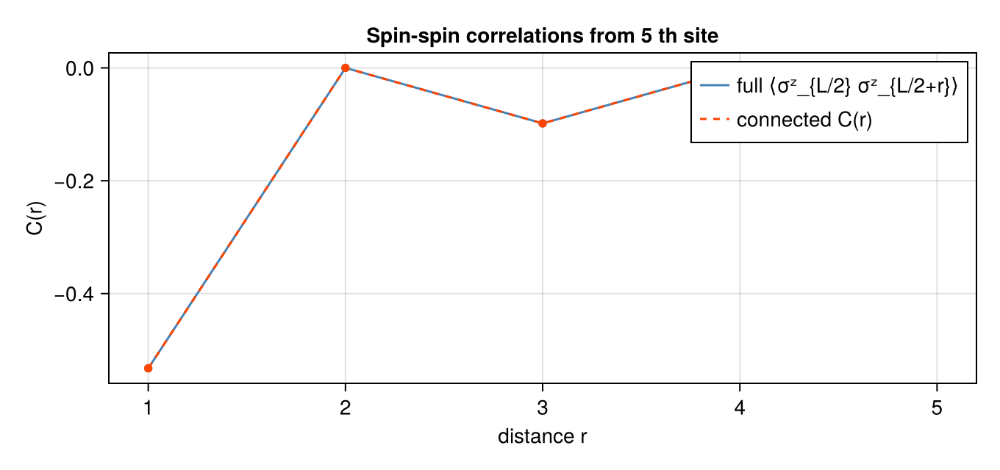

using LinearAlgebra, Serialization, Qritical
using CairoMakie
const DATA_ROOT = normpath(joinpath(@__FILE__, "..", "..", "data"))
ψ_raw = deserialize(joinpath(DATA_ROOT, "psi.jls"))
N = ndims(ψ_raw); d = size(ψ_raw, 1)
sites = Tuple([upper(Symbol(:s, i), d) for i in 1:N])
mps = to_mps(QTensor(ψ_raw, sites); trunc=MaxBondDimTrunc(32), form=:left)
println("MPS length: ", N, " max bond dim: ", maximum(size(t.data, 3) for t in mps.tensors))MPS length: 10 max bond dim: 32
Ex 5. Vidal (Γ-Λ) Notation and Observables
Week 5 — where this sits in the arc. A mixed-canonical MPS (Weeks 3–4) makes the Schmidt spectrum explicit at one bond — wherever the orthogonality centre happens to be. Vidal's Γ–Λ form makes it explicit at every bond at once. That single change is what lets us read the entanglement of the whole chain in one glance and — crucially for Weeks 7–9 — apply a gate anywhere and re-centre for free, which is the data structure TEBD is built on.
The Vidal form factors each left-canonical tensor $A_i = \Lambda_{i-1}\,\Gamma_i$ where $\Lambda_k = \mathrm{diag}(\lambda^{[k]}_1,\ldots)$ are the Schmidt values at bond $k$. All physical information is encoded in the $\Gamma\Lambda$ structure.
Written symmetrically the state reads
\[|\psi\rangle = \sum \Gamma^{\sigma_1}\Lambda^{[1]}\Gamma^{\sigma_2}\Lambda^{[2]} \cdots\Lambda^{[N-1]}\Gamma^{\sigma_N}\,|\vec\sigma\rangle .\]
Absorbing the $\Lambda$ on either side of a chosen bond instantly gives the mixed-canonical form centred there, so observables at any site cost the $O(D^2 d^2)$ of the Eq.-97 shortcut without re-sweeping the chain. Vidal is mixed-canonical form "pre-computed everywhere at once."
(a) Convert to Vidal form
to_vidal(mps) returns a new FiniteMPS in VidalForm. The round-trip to_canonical(to_vidal(mps)) should reproduce the original.
mps_v = to_vidal(mps)
println("After to_vidal: ", mps_v.form)
mps_back = to_canonical(mps_v)
println("Round-trip form: ", mps_back.form)
println("Round-trip ⟨ψ|ψ⟩: ", round(real(overlap(mps_back, mps_back)); sigdigits=10))After to_vidal: VidalForm()
Round-trip form: CanonicalForm(10, 11)
Round-trip ⟨ψ|ψ⟩: 1.0
The $\Lambda_k$ are Schmidt coefficients, so $\sum_\alpha\lambda_\alpha^2$ is the trace of the reduced density matrix across bond $k$ — it must equal $1$ at every bond for a normalised state. Checking all bonds at once is a diagnostic unique to the Vidal form (a canonical MPS only exposes the centre bond directly). Normalization: Σ λᵢ² = 1 at every bond for a normalized MPS
println("Bond norms ‖Λₖ‖² (should be ≈ 1):")
for k in 1:N
sv = mps_v.bond_svs[k+1].values
println(" Bond $k: ", round(sum(abs2, sv); sigdigits=6))
endBond norms ‖Λₖ‖² (should be ≈ 1):
Bond 1: 1.0
Bond 2: 1.0
Bond 3: 1.0
Bond 4: 1.0
Bond 5: 1.0
Bond 6: 1.0
Bond 7: 1.0
Bond 8: 1.0
Bond 9: 1.0
Bond 10: 1.0
(b) Entanglement entropy from the Λ spectra; observables on the canonical form
The real payoff of the Vidal form: the bond matrices $\Lambda_k$ are the Schmidt values across bond $k$, so the bipartite entanglement entropy $S_k = -\sum_\alpha \lambda_\alpha^2 \log_2 \lambda_\alpha^2$ is read off directly from mps_v.bond_svs, with no contraction.
Expectation values, by contrast, are evaluated on the canonical reconstruction to_canonical(mps_v): Qritical's local_expectation / two_site_op contract the bare site tensors, which reproduce the state only in canonical form — not from the bare $\Gamma$ tensors (those carry inverse-$\Lambda$ factors and would overflow). The round-trip is exact, so these match the original mps.
A $\Gamma$ tensor is $\Gamma_i = \Lambda_{i-1}^{-1} A_i$: it hides an inverse Schmidt matrix. Whenever a $\lambda_\alpha$ is tiny (or an exact zero — common when the true bond rank is below the cap), $\lambda^{-1}$ blows up, and a naive contraction of bare $\Gamma$'s amplifies round-off catastrophically. This is why to_vidal uses a pseudo-inverse (zeros map to zeros) and why every observable here is measured on to_canonical(mps_v), where the $\Lambda$'s have been reabsorbed and nothing is ever divided.
\[S_k\]
is the von Neumann entropy of the reduced density matrix of either block, in bits (base-2 log). $S_k=0$ is a product cut, $S_k=\log_2\chi$ is maximal for bond dimension $\chi$. For a gapped 1D ground state $S_k$ saturates to a constant as the block grows — the area law — which is the deep reason a finite bond dimension suffices and MPS methods work at all.
ops = algebra_generators(SpinHalf())
σz = ops.Sz * 2
σx = ops.Sp + ops.Sm2×2 Matrix{ComplexF64}:
0.0+0.0im 1.0+0.0im
1.0+0.0im 0.0+0.0imEntanglement entropy at each bond, straight from the Vidal Λ Schmidt values
entropy_bits(λ) = let p = abs2.(λ) ./ sum(abs2, λ)
-sum(pα -> pα > 0 ? pα * log2(pα) : 0.0, p)
end
S_bond = [entropy_bits(mps_v.bond_svs[k+1].values) for k in 1:N-1]
println("Entanglement entropy per bond (bits):")
for k in 1:N-1
println(" bond $k|$(k+1): S = ", round(S_bond[k]; sigdigits=4))
endEntanglement entropy per bond (bits):
bond 1|2: S = 1.0
bond 2|3: S = 0.7407
bond 3|4: S = 1.069
bond 4|5: S = 0.8773
bond 5|6: S = 1.093
bond 6|7: S = 0.8773
bond 7|8: S = 1.069
bond 8|9: S = 0.7407
bond 9|10: S = 1.0
Observables on the canonical reconstruction (normalized by ⟨ψ|ψ⟩)
mc = to_canonical(mps_v)
nrm2 = real(overlap(mc, mc))
σz_site = [real(local_expectation(mc, σz, i)) / nrm2 for i in 1:N]
σx_site = [real(local_expectation(mc, σx, i)) / nrm2 for i in 1:N]
println("\n⟨σᶻᵢ⟩ = ", round.(σz_site; sigdigits=3))
println("⟨σˣᵢ⟩ = ", round.(σx_site; sigdigits=3))
⟨σᶻᵢ⟩ = [-4.16e-16, 4.0e-16, -3.02e-16, -2.82e-18, 3.02e-16, -7.09e-16, -5.0e-16, 1.6e-15, -5.0e-16, 0.0]
⟨σˣᵢ⟩ = [1.42e-15, -1.18e-15, 1.73e-15, -1.64e-15, 2.35e-15, -2.59e-15, 2.58e-15, -2.58e-15, -1.4e-16, -3.87e-17]
The Vidal→canonical round-trip is exact, so observables from the reconstruction must match those of the original left-canonical mps — the ultimate check that tovidal/tocanonical preserved the physics and did not leak through the Λ⁻¹. Cross-check: Vidal→canonical reproduces the original MPS observables
σz_orig = [real(local_expectation(mps, σz, i)) / real(overlap(mps, mps)) for i in 1:N]
println("Max |⟨σᶻ⟩_reconstructed − ⟨σᶻ⟩_original| = ",
round(maximum(abs.(σz_site .- σz_orig)); sigdigits=4))Max |⟨σᶻ⟩_reconstructed − ⟨σᶻ⟩_original| = 2.567e-16
(c) Nearest-neighbour correlations $\langle \sigma^z_i \sigma^z_{i+1} \rangle$
The connected part $\langle\sigma^z_i\sigma^z_{i+1}\rangle_c$ strips off the product of local magnetisations, leaving the genuine short-range correlation that nearest-neighbour bonds carry. Correlations on the canonical reconstruction (normalized)
zz_nn = [real(two_site_op(mc, σz, σz, i, i+1)) / nrm2 for i in 1:N-1]
zz_c_nn = zz_nn .- σz_site[1:end-1] .* σz_site[2:end]
println("⟨σᶻᵢ σᶻᵢ₊₁⟩: ", round.(zz_nn; sigdigits=3))
println("Connected ⟨··⟩_c: ", round.(zz_c_nn; sigdigits=3))⟨σᶻᵢ σᶻᵢ₊₁⟩: [-0.736, -0.25, -0.558, -0.296, -0.532, -0.296, -0.558, -0.25, -0.736]
Connected ⟨··⟩_c: [-0.736, -0.25, -0.558, -0.296, -0.532, -0.296, -0.558, -0.25, -0.736]
(d) Long-range correlations $\langle \sigma^z_{L/2}\,\sigma^z_{L/2+r} \rangle$
For distances $r \ge 2$ the transfer matrix between the two operator insertions must be propagated explicitly. two_site_op handles arbitrary $(i,j)$.
Between the two insertions sits a product of $r$ transfer matrices, so $C(r)=\langle\sigma^z_{L/2}\sigma^z_{L/2+r}\rangle_c$ decays like the leading sub-dominant eigenvalue $\eta_2$ of that transfer matrix: $C(r)\sim \eta_2^{\,r}=e^{-r/\xi}$ with $\xi=-1/\ln\eta_2$. Reading $\xi$ off this curve is how you extract the correlation length of the state — exponential decay signals a gapped phase, a straight line on a log plot.
l = N ÷ 2
corrs = [real(two_site_op(mc, σz, σz, l, l+r)) / nrm2 for r in 1:N-l]
corrs_c = corrs .- [σz_site[l] * σz_site[l+r] for r in 1:N-l]
println("⟨σᶻ_{L/2} σᶻ_{L/2+r}⟩ and connected C(r):")
for r in 1:N-l
println(" r=$r: full=$(round(corrs[r]; sigdigits=4)) connected=$(round(corrs_c[r]; sigdigits=4))")
end⟨σᶻ_{L/2} σᶻ_{L/2+r}⟩ and connected C(r):
r=1: full=-0.5325 connected=-0.5325
r=2: full=1.448e-16 connected=1.448e-16
r=3: full=-0.09834 connected=-0.09834
r=4: full=-7.112e-17 connected=-7.112e-17
r=5: full=-0.06095 connected=-0.06095
Plot the full and connected correlators against distance.
fig = Figure(size=(680, 320))
ax = Axis(fig[1,1];
title="Spin-spin correlations from $l th site",
xlabel="distance r", ylabel="C(r)",
xticks=1:N-l,
)
lines!(ax, 1:N-l, corrs; color=:steelblue, label="full ⟨σᶻ_{L/2} σᶻ_{L/2+r}⟩")
lines!(ax, 1:N-l, corrs_c; color=:orangered, linestyle=:dash, label="connected C(r)")
scatter!(ax, 1:N-l, corrs; color=:steelblue, markersize=8)
scatter!(ax, 1:N-l, corrs_c; color=:orangered, markersize=8)
axislegend(ax)
fig
This page was generated using Literate.jl.